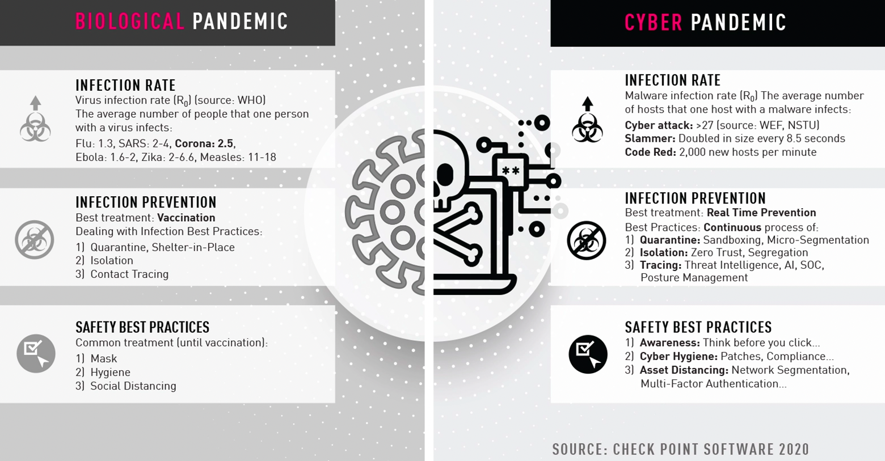
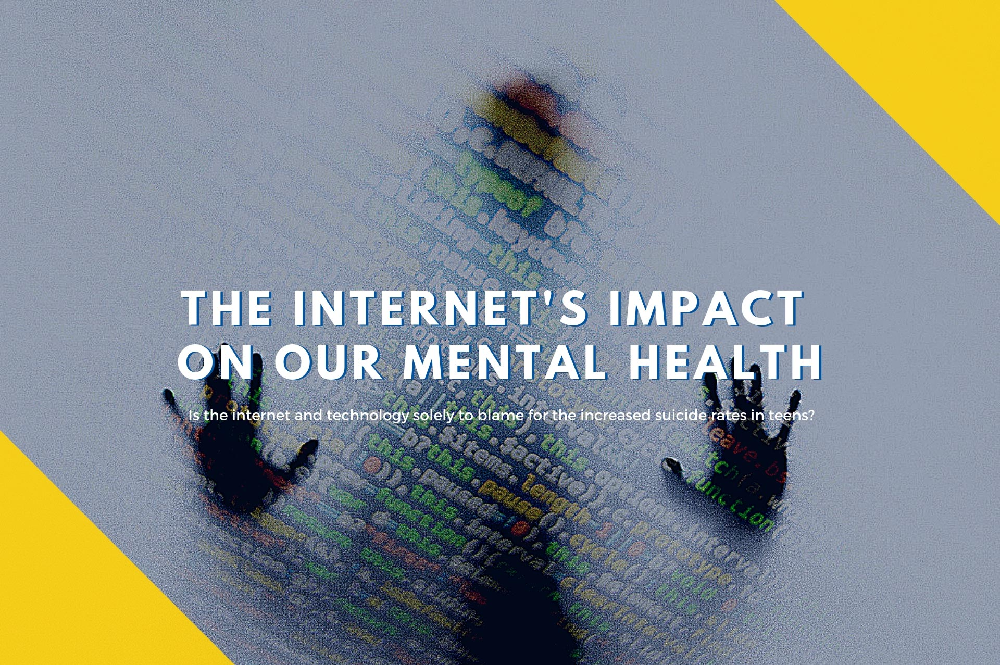
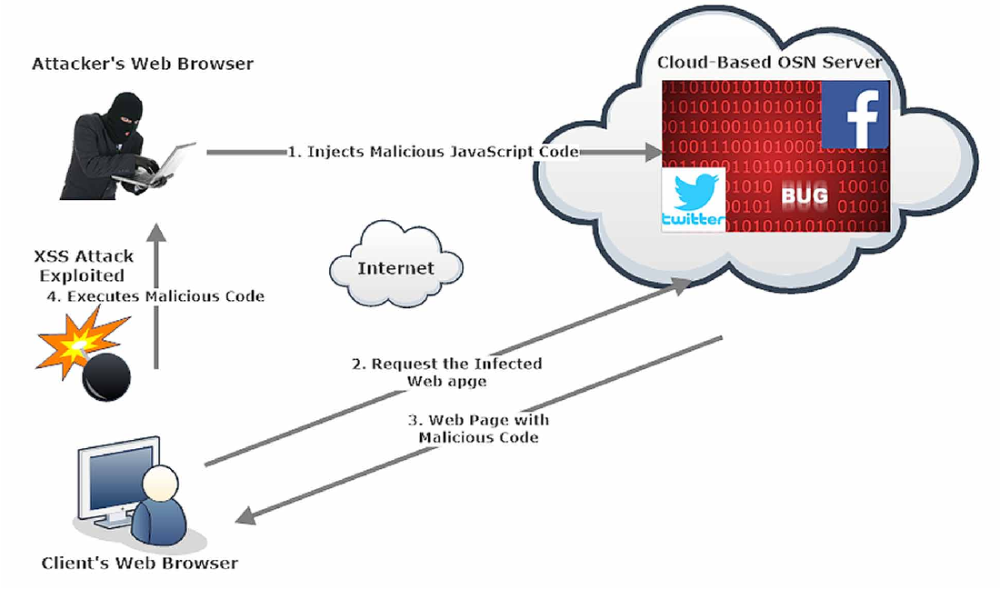
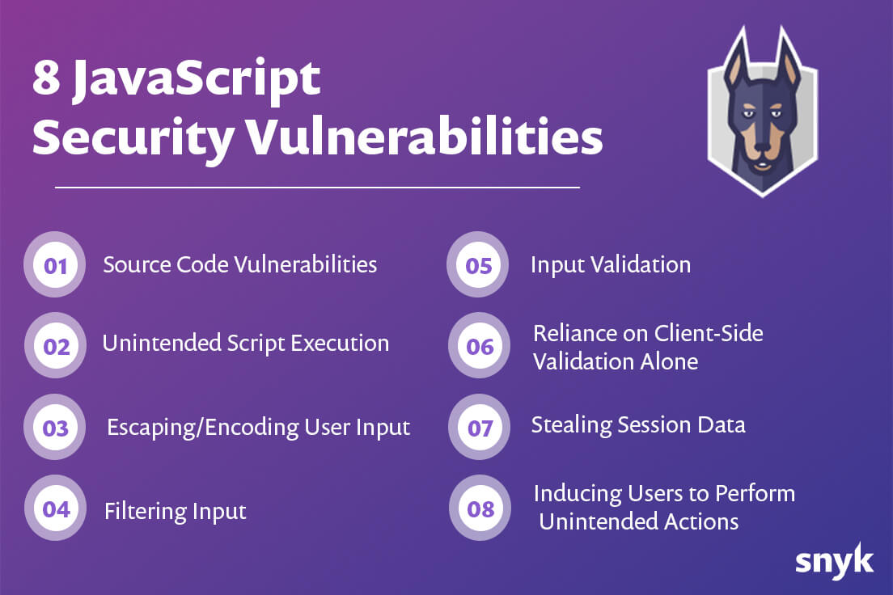
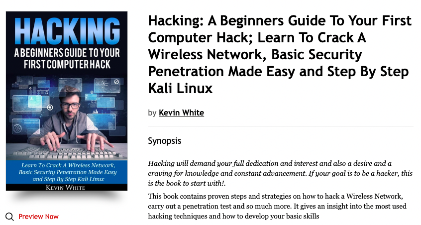
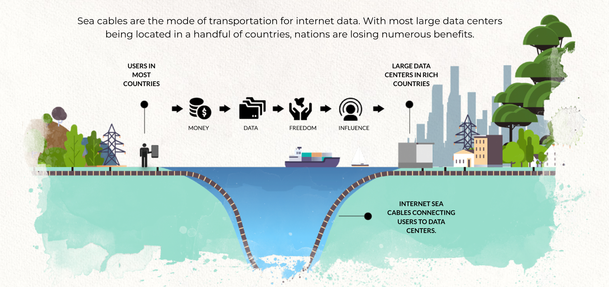

Introduction
Opinionated Cyber Security Brief
Security and privacy are two topics of a major concern to every government in these challenging times.
In one document it's impossible to give a complete overview nor a solution but we hope that we have provided some food for thought and a glimpse of a high-level strategy that will warrant much more detail and further consideration.
At a personal level, we are very motivated by the idea of creating an upgraded internet where every citizen can be free to learn, express themselves and partake. Of course, such an internet needs to be in line with government requirements.
We call this document an “opinionated” document because it's certainly not reflective of mainstream thinking. This document has been written as objectively as possible but by design is informed by our +30 years working in the internet industry. We were one of the early innovators on the internet and have dedicated our lives to making the internet a safer and more fair place. We are very disappointed by the solutions presented by the commercial IT ecosystem and believe they don’t have the people’s best interests at heart, they are mainly money- making machines. Complexity is their friend, and like a painkiller when a patient is sick, they neither address the root cause of the issue, nor do they deliver sustainable solutions.
We believe solutions need to be created that empower a country and its government and give them everything they need to have 100% of their own future in their hands, with no strings attached.
This can be done by:
- Having all code and knowledge inside the country.
- Building Education programs to make sure that further systems development can happen in the country.
- Creating organizations that are reliable and coming from the heart with love and loyalty for their country.
- Emphasizing the importance of values , this is not a marketing exercise, this needs to be the strong foundation of anyone helping their country to become digitally independent.
Priority Red Risks

This section is not meant to be a full description of security issues, rather a glimpse of what threats are both probable and possible today and should therefore be considered as risks for a nation.
A “cyber pandemic” is a reality

Just like we have a virus based pandemic, the cyber pandemic is probably even more dangerous and life threatening.
Because of how big nations have been preparing their digital supremacy, lots of “viruses” have been created and have been deployed.
There are hundreds of proof points, we just pointed to some. We know for a fact from people who do this work for a living, that +- everything is compromised with pre-planted vulnerabilities.
This is very similar compared to what can happen with a virus based pandemic, you pre-plan bio warfare, we can only imagine what happens after deploying such an attack, a real pandemic where some falsely believe they can control the outcome, this to us is the fastest path to destruction of potentially even the human race.
The cyber pandemic is comparable, and is already there, maybe not deployed at full scale yet, but these backdoors are there, it's just a matter of time and money before they get exploited on a bigger scale.
In case you want some proof, today for less than 50k USD per year you can get access to someone’s full digital life and footprint (travel, information, data, financial transactions, …). Important people like presidents of course come at a premium.
There is a 3rd world war, it's a war on data and digital infrastructure.

Data is the new gold of the digital universe, few global countries and some corporations have absolute dominance from this perspective.
In state of conflict first thing happening are actions to destabilize critical digital infrastructure:
- Ukraine, Russia took out 5 datacenters as first targets to destabilize the country and destroy important data for the country (e.g. birth certificates are now gone, land ownership…).
- Ukraine gets lots of denial of service attacks (only one of sources, other one).
- There are many other signs where cyber attacks are used to influence people or take over infrastructure.
- Countries are not prepared for these situations, example here.
- Intelligence Organizations, do harvest info, there are tons of links but some to start: link1.
Only very few countries in the world have enough resources to play in this 3rd digital world war, the other countries are completely unprotected and at the mercy of others.
Most of the IT (network) equipment bought comes from one of the big players and much of it is vulnerable by design.
Information is manipulated to organize state destabilizing actions
Information & public opinion became one of the most valuable commodities in the world, companies are selling their soul for it, large governments are spending many billions of dollars to get access to the information and data in a structured way and prepare themselves for this 3rd world war.
3 large countries with their direct allies have absolute dominance from this perspective, lots of games are being played in between, just like it would be in a real war with spies and double spies.
There are now tens of very concrete examples where governments were taken over because of mass manipulation.
A very concrete example was in Egypt, the revolution some years ago would not have been possible without manipulation of the (social) media. Lucky for Egypt, some groups of people managed to re-organize and undo some of the damage done and the 2e revolution happened, but it shows how dangerous it can be. This is like the box of Pandora, it's very dangerous to execute on and even more difficult to protect against.
Information Manipulation
Manipulation of data leads to huge side effects even going as far as manipulating election results and even genocide in some cases.
It's becoming extremely difficult to distinguish between truth and untruths, one of the issues which need to be addressed is the role of anonymity and reputation. A new internet paradigm is needed.
See:
https://www.diplomatie.gouv.fr/img/pdf/
information_manipulation_rvb_cle838736.pdf
Some links to demonstrate:
- https://freedomhouse.org/report/freedom-net/2017/manipulating-social-media-undermine-democracy
- https://www.ox.ac.uk/news/2021-01-13-social-media-manipulation-political-actors-industrial-scale-problem-oxford-report
- https://en.wikipedia.org/wiki/Internet_manipulation
- https://en.wikipedia.org/wiki/State-sponsored_Internet_propaganda
- https://en.wikipedia.org/wiki/Russian_interference_in_the_2016_United_States_elections
- https://africacenter.org/spotlight/strategic-implications-for-africa-from-russias-invasion-in-ukraine/
Cyber manipulation and cyber attacks are the most efficient way to destabilize full countries and take over power.
Countries like China and Russia have been preparing for this for many years now so they can cut their internet from the global one which we believe is NOT THE RIGHT SOLUTION, this undo’s one of the most important happenings in the world during the last 100 years. The internet brought global access to information and collaboration possibilities. Going back to 100 separate internets would be a very bad move. But we might wonder, why do large powerful countries like this feel the need to be able to cut and separate/control their internet?
Your current internet infrastructure is super vulnerable

The Internet became very centralized, a denial of service attack can bring down full countries very fast.
90% of services used by citizens or governments rely on internet services out of the country, the moment some of the internet lines or crucial internet services like DNS (name services) are taken down is enough to take down the internet.
It's surprising to see how vulnerable the internet became and how few people actually understand this risk.
Possible ways how to bring internet down (these are only a few methods, there are many more):
- Often enough to cut 1 internet or large land cable, this will cause overloads on other internet lines, because of how the internet protocol (TCP) works, it would become unusable for +- all services.
- Do a denial of service attack on name servers in the country or outside, this means names would not be resolved to internet addresses, which means no service.
- Spoof routing protocols, make noise of routing updates, basically make the internet crazy and get it to think about routes which are slow or don’t exist.
- Do a denial of service attack on internet backbone services of a country, all will stop.
- Use some pre-hacked routers, to reroute traffic, again all would stop.
Some Interesting Facts
- +30% of internet traffic goes over Egypt, if that one would go down the internet might have very serious issues to continue normal operations.
- 99% if internet traffic does not stay in country in most emerging countries, leading to more cost and information and money loss
Internet Mental Health & Abuse Is An Issue

Next and aside from privacy and security issues:
Internet is unhealthy for the mainly young population = mental health issues

Some unhealthy side effects of current internet apps:
- Addiction (too much screen time, ignore normal social interactions)
- Unhealthy relation to the ego.
- Manipulation of information leads to extreme behavior.
- Self-esteem issues.
- Mental health issues.
See e.g. https://www.theguardian.com/technology/2021/sep/29/facebook-hearing-latest-children-impact
Africa is a target, and is being taken over…

Africa is super rich in natural resources (food, water, minerals, gold, …). Some large countries seem to do everything they can to destabilize Africa to allow them to extract even more.
Example, why are countries like Tanzania, one of the richest in the world for natural resources, still having one of the lowest GDP per capita? A reason might be that Tanzania is being taken advantage of?
In the case of Tanzania, we are still lucky that there is a stable government with strong leaders, a vision and good will to improve their country, but some other countries in Africa are not that lucky.
In our personal opinion the 3 main tools which make this possible are:
- Investment deals, putting countries in debt, and giving power to external parties.
- Mass scale, manipulation of internet information (in case of country take over, coup d’etat).
- Corruption = greed, leads to unfair deals for the country.
We see right now, there are geo-political movements happening. The big 3 are dividing Africa over themselves to secure their own future.
- https://www.bbc.com/news/world-africa-46783600
- https://www.usip.org/publications/2022/02/sixth-coup-africa-west-needs-its-game
- https://media.africaportal.org/documents/KAIPTC-Policy-Brief-3---Coups-detat-in-Africa.pdf
We believe information manipulation (cyber warfare, psychological info manipulation) is a requirement and the easiest way to make this possible.

Why is this possible
At one point in time, we worked with a large bank, we heard from an insider that they were losing sometimes more than 100m USD on security-related issues and would never admit this or even be open about it. It was just not possible for them to do so, otherwise, they could lose the trust of their customers.
Its really a crazy world out there, the cyberpandemic is real.
This section tries to show you some of the issues to deal with.
Backdoors are in the majority of network attached devices
Backdoors are the reality of digital life, they might have been created with the right intentions but the unintended consequences are dramatic.
Every motherboard, router, hard disk, CPU … purchased today has backdoors inside.
While this was intended to only be used by certain “instances” , this has grown completely out of hand.
The root keys and secrets are known by many and can be used and abused by whoever wants to do so including bad actors.
This is such a much more big problem than most people realize, its like a real pandemic its everywhere.
Hacking became a very big business, and the cyber attack pandemic became a reality. This topic should not be underestimated nor ignored, it's a sovereign issue, it's not too late now, but we need to act while there is still time.
Some info
Most network components are vulnerable and/or pre-hacked
Routers, Wifi Bridges are ideal components for hackers to get into network traffic and intercept packets they are interested in. There are claims that more than 50% of routers and network components are vulnerable or hacked. Personally, I can believe this. Man in the middle attacks are easy to do, information can freely be found on the internet (just an example article).
security products might be compromised

Some security products are compromised
We are not implying that the products you buy now are compromised but they might be, we just want to point you to the possibility.
If you were a party looking for ways to access information, it might seem logical to insert “vulnerabilities” inside security products.
It's a logical spot because these products are used to protect sensitive information, in other words allowing code and backdoors to be close to where the data and action is.
DO NOT BELIEVE THAT GETTING SECURITY OR PROTECTION CAN BE OUTSOURCED, YOU NEED PEOPLE IN YOUR COUNTRY OR ORGANIZATION THINKING ABOUT YOU < BEING YOU> !!!
Most security protocols are vulnerable
SSL is used everywhere to protect eCommerce and many more secured websites. SSL works based on a key exchange between client and server. Many routers on the internet are hacked (large majority) which leads to allowing “man in the middle attacks” to happen. It's a reality that most of the secure connections to centralized servers can be intercepted if there is any value to it.
Many of these protocols lead to a false sense of security.
People are vulnerable

We are certainly not implying that people are bad by design, but people are the vulnerable part of any IT system. Self-healing systems are the future, they allow systems to run, sometimes protected by consensus mechanisms like on blockchain to make sure that human “error” is less of an issue.
People related issues can be:
- Not enough education.
- Genuine mistakes being made (+90% of issues).
- Bribery sometimes extortion of people who operate/deploy IT systems.
- Manipulation by fear or media, resulting in wrong decisions.
- Ego driven decisions, often IT people are by design unsecure, putting too much power in their hands is not always the wise decision.
Simplicity, education, and transparency is the best solution here.
Centralization is a root cause of issues

The more centralization the more it's rewarding to hack. Spending millions to hack a system with millions of users is rewarding. Hacking a decentralized system where everyone needs to be dealt with individually is commercially far less rewarding .
Centralized systems are extremely vulnerable, the hacking surface is often massive. Social engineering, backdoors, javascript & browser vulnerabilities, … lead to huge breaches when hacking happens.
The centralized services give out a lot of information
Services like Google, Facebook, … do have access to our full personal life. Where are we, what do we buy, how do we travel, who do we meet, what do we search for, it's now proven that our personal and business information are being compromised and used during our illusion of security and privacy. Many claim that this information is being used outside of the scope of the privacy regulations or even the expectations of the users. The real value lies in the personal data, as much as in the products and services purchased.
Hacking is a commercial business

I personally only have knowledge of the pricing of 3 years ago but at that time it would cost about 50k USD to get the digital life of a person, everything: email, chats, passwords, bank details…
A VIP was of course more expensive. There are massive hacking companies operating globally which pre-hack most of the devices on the internet.
This leads to security for the rich and leaves others unprotected and vulnerable leading to a vicious cycle where the unprotected are more abused and find themselves with fewer chances for creating prosperity for their nation.
Right now +- anything can be hacked its just a matter of price and time.
Web browsers are extremely dangerous
Web browsers became our new operating system, they execute javascript code at runtime in the browser. Most attacks happen through this, it's extremely difficult to guard against, because inserting javascript inside your browser experience is still not so hard today. It's a very difficult problem that can not be easily resolved because otherwise the user experience would become too complicated and people would opt-out.
Through the inserted javascript code (often through man in the middle attacks) it's rather easy to get access to lots of valuable information and even pretend to be a user.
SSL encryption is super easy to workaround by means of man in the middle attach.
Javascript Too Easy To Mislead

JavaScript security is related to investigating, preventing, protecting, and resolving security issues in applications where JavaScript is used.
JavaScript itself is a fundamental technology for building web applications and is also very popular for building server-side, desktop, and even mobile applications. It’s widespread popularity, however, also makes it a prime target for hackers, looking to target it through various attack vectors. Because JavaScript is used mostly in the front-end, it makes sense to focus first on JavaScript security issues in browsers.
Most common JavaScript attacks vectors include: executing malicious script, stealing a user’s established session data or data from the browser’s localStorage, tricking users into performing unintended actions, exploiting vulnerabilities in the source code of web applications.
Of course, this list is by no means exhaustive; rather, it is more focused on the front-end aspect of web applications.

Man In The Middle Attach

A man in the middle (MITM) attack is a general term for when a perpetrator positions himself in a conversation between a user and an application—either to eavesdrop or to impersonate one of the parties, making it appear as if a normal exchange of information is underway.
The goal of an attack is to steal personal information, such as login credentials, account details and credit card numbers. Targets are typically the users of financial applications, SaaS businesses, e-commerce sites and other websites where logging in is required.
Information obtained during an attack could be used for many purposes, including identity theft, unapproved fund transfers or an illicit password change.
Additionally, it can be used to gain a foothold inside a secured perimeter during the infiltration stage of an advanced persistent threat (APT) assault.
Some more info
- https://www.express.co.uk/life-style/science-technology/1270340/Google-Chrome-warning-extensions-danger
- https://www.cpomagazine.com/cyber-security/googles-chrome-web-store-security-is-successful-but-a-bigger-storm-is-brewing/
- https://www.imperva.com/learn/application-security/man-in-the-middle-attack-mitm/
- https://snyk.io/learn/javascript-security/
- https://en.wikipedia.org/wiki/Man-in-the-middle_attack
IoT has been about attaching billions of devices to the Internet and the disruption that these devices will create for the world of technology and everyday lives. Without security, this disruption could result in tragedy.
There is a funny joke about IoT that has been shared around Twitter over the past few months. I saw it attributed to a guy named Tim Kadlec (@tkadlec). “The S in IoT stands for security.” Think about that for a second, as you say, “wait, there is no S in IoT”. That is exactly the point of Tim’s statement. IoT is missing security.
IoT devices are 99% of the cases based on Linux, the users don’t know what is running on these devices.
There are so many known vulnerabilities inside IoT devices.
We put these IoT devices inside our secure areas sometimes to monitor people e.g. security cameras (https://www.forbes.com/sites/leemathews/2021/09/22/widely-used-hikvision-security-cameras-vulnerable-to-remote-hijacking/) or print sensitive information (printers). Don’t be mistaken this is very dangerous and numerous attacks have happened this way. Building security at the perimeter is almost impossible because these devices are good at mimicking default allowed communication and find their way outside that way (e.g. mimicking a user on the network who is just going to a standard website).
IoT is inside TV’s, routers, security cameras, medical devices, printers, … today sometimes even a fridge.
It's easy to hack, using existing vulnerabilities

Info can be found on the internet and can be done by not even serious experts.
- e.g. a youtube training.
- e.g. on medium.
- Other: example.
I just found these in 2 min google search, it's actually all quite simple and effective.
Sometimes it requires some social engineering or getting people on fake websites but it's a lot less difficult than people might think and it's actually hard to protect against using existing off the shelf components. e.g. firewalls do not help.
I’ve seen kids doing this and even enjoying it because of the feeling of empowerment it gives them.
Hackers like to hack

Many of them don’t feel appreciated by “normal” society and they wanna use their superpowers to work on alternative domains. Hacking gives them a purpose and they become powerful and important.
Hacking can be used to:
- Get access to private information.
- Spying on governments and their people.
- Can be intellectual property, political information,
business tactics, defense/military information...
- Manipulate information
- Done much more than we think, done on a massive scale with millions of people at once.
- E.g. every search you do in e.g. Google is manipulated for you as a target.
- Compromise important people, to get something in return.
- Hack other devices
- In most cases, devices are hacked to become a tool to further hack or do denial of service.
- Tools for war
- Today hacking can be used to do denial of service attacks on e.g. power plants, governments, … Some have happened already, we expect this will be much more the case.
- Ransom
- Most victims do not speak about it, because they don’t want to tell the world, shame.
- It's very good business and happens a lot.

The centralized clouds or telecom operators are NOT PRIVATE NOR SECURE
Most of the info here is harder to find, maybe because it's related to security and google or other centralized providers, but we believe that much if the info on wikileaks is factual and might represent reality, e.g. Google clouds are connected to NSA and actively searched for.
THIS MEANS ANY INFORMATION YOU SEND/RECEIVE ON GOOGLE MAIL AND DOCUMENTS IS NOT PRIVATE NOR SAFE. Please do realize this is NOT ONLY the NSA looking at this, if they can many others can as well and some of them might not do it for the right reasons.
We do know the following for a fact though, all telecom operators in Europe have dedicated racks in their datacenters where all voice & sms traffic from that telecom operator gets routed through. These dedicated racks are owned by different countries in the world. I am not questioning that this might be a good practice but the reality is that this leads to security issues and non intended consequences. For sure there is an ethical question, is it normal that citizens do not realize that they are being spied upon by different governments not related to their own, there is no transparency about this. Again a case can be made that this type of traffic needs to be monitored but why does this have to be done by multiple out of country organizations which might allow other hackers to abuse this situation and it does happen.
It's possible that these monitoring probes are heavily targeted by hackers all over the world and probably compromised.
Data should not be on centralized clouds or user machines (desktop/notebook)
Centralized Clouds
Many governments today rely on centralized services like Gmail, Google docs, Microsoft office. This leads to a lot of exposure to sensitive information. The information leaks all over the world and ends up in many locations. It's impossible to secure information this way.
Because often existing IT systems are not flexible enough, government instances will turn to these services and sometimes even use their own credit card to get the flexibility they require. This can happen on a small or large scale, even if there are often strict guidelines given that this should not happen.
We believe that relying on centralized systems from cloud vendors out of your country is not a good approach (backdoors, information theft, too easy to share, no ability to control, ...)
Often the more regulations introduced the more people will go to systems outside of their government sometimes even the country. In other words security framework or regulations often do not help.
User Desktops

Despite apparent reliability of modern computers, users still lose their crucial information. Even expensive high-quality hardware equipment and utterly reliable software cannot guarantee 100% failure resistance of your PC or laptop.
Also hacking happens often by using vulnerabilities in your desktop or phone operating system.
Cloud market leaders are sometimes misleading their customers.

Of course, companies like Microsoft/Google/Amazon will claim privacy and security is important to them, and make misleading statements, but if you look at the small letters around their service levels it turns out not to be such a great story.
Just one example: AWS Quotes on its website:
When evaluating the security of a cloud solution, it is important for you to understand and distinguish between the security of the cloud, and your security in the cloud. Security of the cloud encompasses the security measures that AWS implements and operates. We are responsible for the security of the cloud. Security in the cloud encompasses the security measures that you implement and operate, related to the AWS services you use. You are responsible for your security in the cloud. For more information, see the AWS Shared Responsibility webpage.
This is not shared responsibility, this just means, we Amazon take NO responsibility.
Please do note that it's often not even in their control. People using these services are making it insecure by design. Many computers and mobile phones are hacked and make the information accessible to others. Centralized designs are simply more unreliable and unsafe.
Some would claim that even these large organizations like Google are not safe themselves and do not mind making information available. Allow me to not take an opinion here, it's just my intent to show you this possibility.
Many security & privacy claims are void
Often the claim from a company and reality do not align. E.g. WhatsApp claims that the encryption protocol they use between the WhatsApp applications is end2end encrypted, which is probably true, but the reality is that the application itself is leaking information to centralized servers. This is unfair and misleading information. Most application claims do not correspond with reality. e.g. https://www.wired.com/story/whatsapp-facebook-data-share-notification/
Solution

In this section we offer you some ideas on how some of the pre-listed issues might be resolved.
Limit Amount Of Centralization
Avoid centralization of people
Too often few people have too many superpowers, this is dangerous. These people can sometimes unwillingly be the access point for hackers to enter the system. Of course, there are also cases where people themselves get paid lots of money to open doors for others or extorted.
Use systems where deployment of a solution happens in a 100% deterministic way and where consensus between people and teams needs to be achieved.
Infrastructure as Code Might Help

Infrastructure as code is a good methodology to organize and your deployment, but also here in most systems few people have too much power, it's a good starting point and with some simple tricks such a system can be made more decentralized and consensus driven.
Do note, most current systems are not good enought, they havily rely on superpowers of some developers.
Use open source software as much as possible.
Hire people who are fluent with open-source software, do everything in an open manner. If security is really important then make sure your team can read and validate the code used.
Often such code needs to be extended and integrated with a centralized blockchain based identity and authentication management system (see below).
Code needs to be built in house with experts and cross-building strategies can be done to make sure that no backdoors are inserted while building (compiling) the software, best would be to integrate this with “infrastructure as code” approach (see above).
PS: opensource software does not mean free, there is a cost involved in maintaining, improving such systems in line to requirements of a government or company. This can be an outsourced or internal approach. Very good knowledge is required to make such a strategy successful, and this is often an issue.
We suggest using software which is managed by people with knowledge, which often means paying a license fee, but demand the software is open source and understood by people under your control.
Avoid complexity.
Complexity is the biggest evil for security. IT systems in general are extremely complex. The more layers the more it's difficult to see what is going on. Adding more layers to improve security has often the reverse effect. The most simple systems have the smallest hacking surface. Simplicity is your biggest friend in the security domain.
Many governments rely on commercial systems which are not open source nor simple, this forces the IT administrators to create a layered building block approach of often hundreds of different systems which need to work together. Each system adds to complexity, each system needs to be maintained, looked at from a security vulnerability perspective, upgraded, … This is often not done properly because administrators are afraid of the impact on uptime. Most will go for an approach as follows: if not broken, don’t touch, unfortunately in IT this is not doable, the more systems someone uses the more vulnerability issues inside (see risk of bugs & backdoors), today most systems need to be upgraded on a monthly basis. Now imagine what this does for 100 interconnected systems which all need to be individually updated and keep on working together, this is a nightmare to execute on.
TODO: complete
Blockchain
Use a blockchain based identity and authentication management system
Using a blockchain for managing identity and authentication.
A digital ledger is a good base to store information about users, groups and their access rights, proper “smart contracts” can be used to let the right people define security clearance levels and group access.
Don’t give the power of this to administrators, consensus needs to be implemented to allow management of groups & rights by itself. Consensus between required instances is a very important element to create a strongly identifiable and authenticated security access layer.
TODO: complete
Use Datacenters Carefully
Datacenters are and will be the first point of attack in a conflict situation, even countries like Ukraine only had 4-5 good datacenters which needed to be taken with disaster results. Next to physical violence Datacenters can be attacked over the network too or through insiders. Centralization is not a good strategy for securing your most valuable assets.
While Datacenters are potentially required for certain high end compute requirements, they are for sure not needed for storage and alternative strategies can be created for most compute workloads as well.
If Datacenters are a must we would recommend to build small ones and have them spread over the country on at least 10 strategic locations and have good strategies in place to deal with data distribution (don't use replication, see below)
Better Storage System
Use Distributed Data Storage Systems, avoid Replication.
Also, centralized services are vulnerable, e.g. the best way to store data is using a quantum safe storage distribution system where not even a quantum computer can hack.Implement a new type of internet architecture, one which is much more decentralized.
Replication is a very bad approach, it leads to copying data to multiple locations leading to a bigger hacking surface! Please do not use replication in any of your data storage mechanisms.
There are storage systems today (some even as licensed opensource) which allow you to store data in such a way it can never be lost, stored over multiple locations, no data corruption can happen.
TODO: complete
Self Healing
Be ready for the future, consensus driven self healing approach.
Use the “human” element carefully. Self healing systems are becoming a possibility, it's only possible where simplicity was the rule. Self healing and automating complicated systems is too hard and vulnerable by itself.
Blockchain enabled consensus driven deployment techniques can help. This is a very novel approach, but highly recommended.
todo: complete
Sovereignity
Do not put all your eggs in the basket off big tech vendors
Most commercial software from big vendors is often not secure enough, even if it is claimed it is. It's too hard for you to really know if the software or system is secure. Of course often there is no choice and the system is required, then it's important to install this system in a sandbox (see above).
Often the security device or software by itself has backdoors and “planted” vulnerabilities, this is hard to believe, but think about the logic behind this. What would you do as a smart government to have more insight, how to come inside another government or big company's network?
For years certain governments have been putting a lot of work into making sure there are backdoors in +- any system which is being sold from their country or related countries. Especially many (if not all) of the big cloud systems are open to their governments and black market access (dark web, which is heavily used by governments and non governments for getting access to anyone’s info as required).
We do realize this might be hard to believe, because obviously this is not what these big companies will want us to believe.
Idea, why not build an “internet infrastructure layer” co-owned by your citizens?
Technology is available these days to build out internet capacity which can be co-owned by the citizens. This allows us to build capacity faster and in a much more reliable way, invested by the citizens, secured by technology.
Think about it how solar panels can generate electricity for the people around, in a similar way compute & storage can be generated by citizens (business or personal) for people around.
This has proven to work very well, super reliable and also regenerative, it might allow much faster expansion and lower cost compared to traditional datacenter building methods.
TODO: complete
Sandboxes
Deploy Secure Private Sandboxes (ultra private areas) for your workloads
Deploy secure apps inside sandboxes that have NO access to the internet, not in, not out. There are possibilities these days to avoid using internet protocols like http or tcp ip inside a secure environment. These are advanced techniques but super efficient to avoid hacking or vulnerabilities.
These sandboxes run compute and storage workloads, but cannot communicate with the internet.
People come in over secure application aware interfaces in such a way no harm can be done.
TODO: complete
Keep all data in Secure Sandbox deployments

Secure locations need to be a mix between distributed and centralized facilities but in such a way that data can never be lost nor modified.
The apps can only access data inside the secure sandbox and use unique storage technology (zero-knowledge proof). No data goes to laptops or desktops.
Access is always done by means of a secure browser or other access technology and audited where required. Only the output of the screen is shown to people in their laptops.
As a principle:
- No javascript applications running in browsers for secure government apps or data.
- All applications which need security are accessed using the secure remote access technology.
- On the network layer all data end2end encrypted with strong authentication.
- Data never leaves the sandbox and is dispersed and encrypted (multi layer) by design.
- All history of changes is kept with full audit trails.
- Blockchain technology is used to allow people with the right security clearance to see the audit trails when that would be required.
- Of course the secure sandbox needs to be secure and at least on 3 locations getting the data from distributed locations so that in case of disaster everyone can still continue.
Opportunities
It is possible to build a unbreakable application ecosystem as alternative to centralized versions
It's work but it's possible to build a private local government IT system as alternative to:
- Google Docs or Office 365
- Dropbox or alternatives
- Centralized project or task management systems
- Zoom
- Youtube/Facebook/Linkedin
With a specialized team this can be created and deployed within 12 months for sure to the extent of happy users who would not feel the need to go elsewhere.
All software used would be open source and understood by teams in the country.
This system is 100% differently designed, more in line with true privacy and security. The description of such a system is outside of the scope of this document.
Create an upgraded country wide internet system.
Such an upgraded internet would have huge benefits
- All data stays in the country
- No abuse of your citizens on centralized systems (less addiction, information manipulation, …)
- Much more performance & scale
- Way more reliable (less bandwidth issues, more uptime, …)
- A lot lower cost for the country
- Less security issues
- 10x less energy usage
ANTIDOTE FOR CYBER PANDEMIC = PRIVATE QUANTUM SAFE DIGITAL BACKBONE

A private intranet digital backbone built with a very different approach in mind.
This multi Trillion USD problem will not go away by itself, we have a multitude of technology solutions at our disposal which are able to provide a real antidote for a cyber pandemic. This antidote is not a "layered on" painkiller quick fix, but a from the ground up re-engineered effective and break through solution.
Some possibilities:
- Liquid cooled edge distributed decentralized network of small edge datacenter nodes (can be basements or other hidden locations), decentralization leads to ability to maintain access to critical services and data at any point in time. Each location can be as small as one cubic meter.
- Provide a quantum safe storage system, make sure data can never get corrupted, lost or stolen. Not even a quantum computer can hack into it. Ultra scalable system.
- In country owned multilayer network communication encryption for government and other collaborators.
- Fortify your existing web (and other) applications, to not allow access over default browsers, a standard browser is a huge security risk and needs to be avoided. We can sandbox access and hosting of these apps.
- Use blockchain technology (BUT in country) deployed in a decentralized way by local teams, do not rely on public blockchain technology or technology which might be compromised or owned too much by coders outside of the country. This can be used for OurLedgerCs.
- Block backdoors (vulnerabilities as used by hackers) to communicate to the internet, not by means of firewalls (proven not to work), but by means of a very different approach (not available publicly today).
The more expensive goodies:
- An ultra private secondary meshed wireless network which will stay up and running even in harshest conditions (war, natural disasters). Is compatible with 4G devices, only authorized people can access. End2End encrypted, not interconnected with ANY existing telecom or internet infrastructure. Many paths between all endpoints can survive attacks and disasters.
- Quantum Safe Network (expensive but doable, not even a future quantum computer will be able to hack such a network). Data packets are cut in parts of information which cannot be intercepted by anyone or brought back together in a way it would make sense to assemble, not even by a quantum computer.
- A communication mechanism which is not using TCP-IP (the internet protocol). The use of FPGA based network processors allows for deployment of neutral sovereign network equipment. The FPGA components are programmable and understood by teams in the country. Because no TCP-IP is being used, backdoors have less chance and it becomes much more complicated for hackers to succeed. Is expensive though but in our opinion worth it. The most important requirement = sovereignty
- All critical software used should be owned in the country by local experts and all needs to be opensource. This is the only way to keep backdoors out and also keep things simple and integrated.
- Local experts need to be able to improve, deploy and integrate all technologies used in country.
- All components required need to be in stock in the country and assembly happening in the country.
SOVEREIGN COUNTRY INTERNET with many use cases inside

Your Internet needs to be more GDP Positive
There needs to be a decentralized but ultra sovereign digital backbone created which can deliver on following requirements. This is for all citizens in the country (unlike as described in the previous section).
-
All data stays in country
-
All users have a unique strongly authenticated identity (using novel mechanisms like proof of authenticity by means of peer review, which is much stronger compared to classic KYC/AML), this identity needs to be unique on country scale and usable for all digital services of the government as well as private sector if they would like to.
-
All critical data is stored on a quantum safe storage system which means
- Data can never be lost.
- Data can never be corrupted.
- The storage system used needs to self heal in case of disaster or corruption.
- All history stays intact, data cannot be modified.
- Encryption technology is NOT enough for security, because this is not quantum safe.
- The system needs to be ultra scalable, support tens of millions of users and needs to be able to scale to at least 1000 petabyte to be ready for the future.
- Reliability policy needs to be configurable, so the data provider/user can decide the level of protection (redundancy) required.
- Even if the main datacenters go down, the data should stay intact & uncorrupted & online.
-
Critical data means
- All billing records.
- Identity.
- Utilization records.
- Government information.
- Government archives.
- … to be further defined …
-
The backbone needs to be scalable
- At least 100m users need to be supported
-
The backbone needs to be flexible, which means usable for all required digital services
-
The backbone needs to be truly decentralized
- Co-owned by the private sector as well as government institutions.
-
The backbone needs to be truly sovereign
- Delivered by local team operating in country (living & working)
- Guided by a non corruptible entity (not for profit might be a good idea) as a supervising entity.
- All source code is open (open source)
- Enough technically skilled people in the country to work & understand this code.
- The code is unlimited usable and there are no hidden costs (licenses, …)
- All improvements can be done from out of country

Internet & datacenter services need to contribute to the GDP of Country, today the Internet probably costs more money than it brings. By using a better digital system and new regulations Country can improve its revenue collection.
More Decentralized And Fair Internet Connectivity Solution
We have our own 5G capable technology available which can be made part of the INCA project model, this allows thousands if not millions of users to co-own their own Telecom Infrastructure to give them access to their future digital life.
Digital HealthCare + Digital Empowered Education System
Deliver solutions which cost less than what is available today and provide more inclusion, millions of people don’t have access to decent healthcare or education, this might improve that situation. Digital future Technology is very capable to make that happen. Super important that this technology stays in line with the above requirements.
Digital Future Life
Allow everyone in the country to participate in a more GDP positive inclusive internet experience. There are a vast number of projects which fit underneath this category, but it's all about providing a sovereign digital future for every Country citizen.
A Public Unified and Sovereign Country Digital Backbone
The upgraded sovereign internet digital backbone needs to be able to support:
- Digital countrywide identity.
- Central Bank Currency (OurLedgerC)
- Voting and other Government Services
- Government Collaboration system with way better security and data privacy measurements
- Education (deliver cost effective but capable education for everyone)
- Healthcare (medical records, global scalable healthcare for everyone)
- Mining Industry (more fair redistribution for natural country resources)
- Land Bank (register all land)
- Transparent Revenue Collection
- Port Authorities (avoid fraud)
A government collaboration system
Without going into detail National Cyber Security is becoming a major topic of the future, see what happened with Ukraine, first this which happened was elimination of their core digital backbone and datacenters.
We believe the government needs to get a sovereign system where only opensource components are used which are understood by technical teams with deep level expertise on those components.
Some ideas
- Highly secure phones running non Google or Apple OS.
- Compute equipment in liquid cooled nodes, EMP safe.
- Collaboration systems use fully decentralized but end2end encrypted infrastructure.
- Strong authentication.
- Entry points are in super safe but stateless environments, this means even if they get lost, data is never lost.
- Data storage is quantum safe
- Browsers CANNOT run Javascript in the browser on the computer (need to use a virtual browser in a secure vault environment).
This system can be integrated in the Sovereign Internet (also public), or as part of the more expensive but highly secure and reliable PRIVATE QUANTUM SAFE DIGITAL BACKBONE.
A SOVEREIGN OurLedgerC SOLUTION

Central Bank Digital Currencies are a great solution to provide a better money system for your citizens.
Thanks to the methodology and technology we have available we can provide a country with a solution which is
- More secure
- Can survive Internet Downtime
- Understood and Maintained in The Country (no dependencies on nodes out of country or expertise)
We work together with some major blockchain (technology) providers to make this happen, but these providers agreed with our terms on how we have to help a country to maintain their sovereignty.
Appendix
The appendix provides an array of sources for further reading on security and vulnerability events and stats:
- Appendix A: security events and stats.
- Appendix B: some examples of vulnerability information.
- Appendix C: should we be paranoid.
Appendix A: security events and stats
- WEF: 2 out of TOP 10 Biggest Global Risks by Likelihood and 2 out of TOP 10 Biggest Global Risks by Impact are cyber-related.
- Number of significant cyber-attacks (cyber-attacks on a country’s government agencies, defense and high-tech companies, or economic crimes with losses equating to more than a million dollars) are rapidly growing and becoming more sophisticated (list of biggest incidents).
- World leaders recognize ransomware attacks as 'global security threat':
- 2020 CrowdStrike Global Security Attitude Survey: 56% of respondents report that their organization has suffered from a ransomware attack in the last 12 months 27% of those who experienced a successful attack ended up paying the ransom, at an average cost of $1.1 million (USD). And these numbers keep growing.
- By the end of 2021, cybercrime is expected to cost the world $6 trillion. By 2025, this figure will climb to $10.5 trillion. If it were measured as a country, then cybercrime would be the world’s third-largest economy after the U.S. and China.
- Cyber Attacks Stats 2021 2. Globally, 30,000 websites are hacked daily. 3. 64% of companies worldwide have experienced at least one form of a cyber attack. 4. In 2020, ransomware cases grew by 150%. 5. Email is responsible for around 94% of all malware. 6. Every 39 seconds, there is a new attack somewhere on the web. 7. An average of around 24,000 malicious mobile apps are blocked daily on the internet.
- Google is Tracking 270 State-Sponsored Hacker Groups From Over 50 Countries
- Average prices: Attackers for hire start at $250 USD per job. Ransomware kits are $66 USD or 30% of the profit. Compromised devices start at 13 cents per PC and 82 cents per mobile device. Spear phishing for hire ranges from $100 to $1,000 USD. Stolen username and password pairs begin at 97 cents per 1000 on average.
- Governments (48%) and NGOs (31%) are most targeted sectors
- More than 37 billion records were breached in 2020
- The average annual security spending per employee increased from $2,337 in 2019 to $2,691 in 2020. (Deloitte)
Appendix B: some examples of vulnerability information
While the next list is only the tip of the iceberg, it shows there is more at stake than we might have imagined. Backdoors are everywhere and have become a part of our life.
The issue is not that they are there, it's how they opened up our infrastructure to so many parties out there who use those “vulnerabilities” to get access to our information. Like a real pandemic it's now +- impossible to stop.
Backdoors in technology products.
- https://www.reuters.com/article/us-usa-security-congress-insight-idUSKBN27D1CS
- https://www.popularmechanics.com/technology/security/a34533340/nsa-tech-back-doors-software
Example of backdoors & some proof points:
- https://en.wikipedia.org/wiki/Intel_Management_Engine (since 2008)
- https://www.techrepublic.com/article/is-the-intel-management-engine-a-backdoor/
- https://www.onesafeplace.com/blog/post/backdoored-in-30-seconds-attack-exploits-intel-amt-feature
- https://www.forbes.com/sites/steveblank/2013/07/15/your-computer-may-already-be-hacked-nsa-inside
- https://www.technologyreview.com/2013/10/08/176195/nsas-own-hardware-backdoors-may-still-be-a-problem-from-hell/
- https://www.theregister.com/2019/03/29/intel_visa_hack/
- PS: AMD has similar mechanisms
- Standard encryption mechanisms by themselves are not safe:
Things to think about:
- Intel buys McAfee, which is installed on so many computers as antivirus software which by design has access to all information on your computer.
- https://www.zdnet.com/article/intel-considering-sale-of-security-arm-formed-after-mcafee-acquisition/
- https://www.zdnet.com/article/intel-cuts-12000-jobs-as-it-bets-on-iot-data-center-over-pcs/ the cpu & motherboards they already own majority, now focus on the other area’s
- 5 possible scenarios:
Wikileaks:
- Is a powerful source of information, the craziest part is, it's not even denied to be true.
- To us it's crazy that this information is ignored for the most part,
a lot can be learned of how vulnerable we are. - Some simple starting point: https://wikileaks.org/vault7 , but there is so much more
Appendix C: should we be paranoid?
We always need to keep in mind what is there to be hacked. What damage can be done if someone would have access? Sometimes the best security is just to be open and not hide at all, then there is nothing to be stolen nor compromised. But don’t be mistaken if any of your strategic people or assets becomes a target. We believe hacking will succeed. Current security practices in most (+-all) countries are not sufficient.